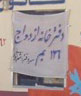
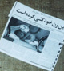

|
زنان، هم در خانه و هم در خيابان کتک مي خورند... 4/1/2005 10:18:52 AM در روز جهاني زن همه ي دنيا فهميدند که ما ترک ها زنانمان را حتا هنگام تظاهرات هم کتک مي زنيم / مرات چليکان Translator: عسل پيرزاده |
کد:62 |
|
مردان چند زنه/ زن گرفتم جنايت كه نكردم! 3/26/2005 7:33:46 AM ويدا زماني / (عضو انجمن زنان کرد مدافع صلح وحقوق بشر) |
کد:61 |
|
 |
برابري، بدون حقوق برابر در مقابل قانون، شعاري است توخالي 3/13/2005 11:51:51 AM دكتر نيره توكلي |
کد:60 |
|
خشونت علیه کودکان: در جامعه ما فاصله تبديل يک دانش آموز به کودک فرار، تنها چند ساعت است! 2/25/2005 8:22:30 AM طلعت تقي نيا |
کد:59 |
|
|  |
وضعيت زنان بم از هر زلزله و فاجعه اي نگران کننده تر است 2/16/2005 6:20:08 AM گلناز ملک |
کد:58 |
|
كودكي براي پدر و مادر سوختهاش مي گريد 2/8/2005 3:17:35 PM ويدا زماني - عضو انجمن زنان کرد مدافع صلح وحقوق بشر |
کد:57 |
|
|
نگاهي به تجاوزهاي جنسي و تنوع آن ها در اخبار ما 1/28/2005 4:34:05 AM طلعت تقي نيا |
کد:56 |
|
|
اخبار بي مسئوليتي ! 1/24/2005 3:36:31 PM طلعت تقي نيا |
کد:55 |
|
|
تا همين چند وقت پيش در يزد مرد خداي دوم زن بود! 12/31/2004 2:14:20 AM فيروزه مهاجر |
کد:54 |
|
|  |
زور مي گويم، پس قوي هستم 12/31/2004 2:13:53 AM گروه کارگاه ها و سمينارهای مرکز فرهنگی زنان |
کد:53 |
صفحه اول |
صفحه قبل |
صفحه بعد |
صفحه آخر
|
1 |
2 |
3 |
4 |
5 |
6 |
7 |
8 |
9 |
10 |
11 |